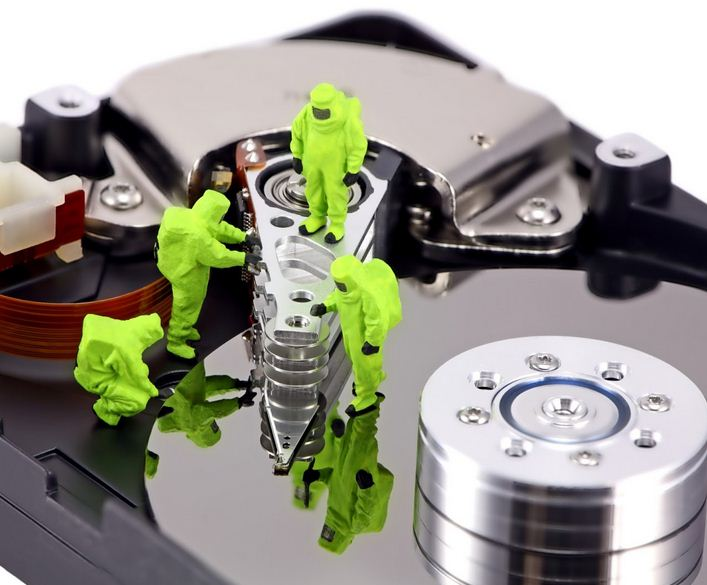

-

Los SSD se han apoderado del mercado doméstico, pero por su capacidad limitada, hay segmentos donde su presencia no es tan notable. Blackblaze, una empresa dedicada a ofrecer soluciones de almacenamiento masivo, ha presentado un nuevo informe referente a la tasa de fallos de sus HDD. Dicho informe nos revela cuales son los discos duros más confiables.
Pese a que los SSD son muy superiores a los discos duros HDD en muchos sentidos, tienen un gran problema: la capacidad. Es muy complicado encontrar unidades de 8 TB en el mercado y estás son muy caras. Parece que el límite está en los 4 TB para los SSD, lejos de los 16-20 TB de los HDD.
Además, el coste del 1 TB en los discos duros mecánicos es bajísimo, algo que también influye para el almacenamiento masivo de datos. Si bien, algunas empresas se plantean, pese a todo, usar SSD por ser mucho más eficientes.